3.1 n维向量概念及线性运算
一、n维向量
今后，我们用小写字母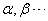等表示向量，而且约定，一般表示列向量。
当然我们要求向量组中向量或全是行向量，或全是列向量，本章重点讨论一个向量组中向量之间的关系。 |
|
例1：设A为一个 |
二、向量的线性运算
|
既然向量作为一个特殊的矩阵，则与矩阵类似，有以下向量的相等、负向量及向量线性运算的定义。
注意：一个行向量与一个列向量即使对应的分量相等，也不能说这两个向量相等。
|
|
例1：设有3维向量组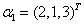，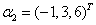，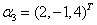，求向量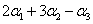 解： 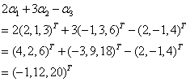 例2：设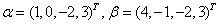，求满足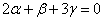的向量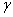。 解： 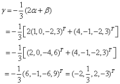 |
三、线性表出与线性组合
例如：在例1中，为向量组 |
|
例3：零向量可用任意一个向量组线性表出。 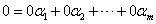 例4：考虑n维标准向量组：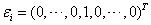，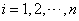，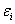中第i个分量为1，其余分量都为0，则任意一个n维向量 |
|
下面介绍线性方程组的向量表示法： 设由m个方程组成的n元线性方程组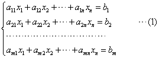 引入m维列向量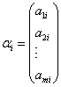 ，及 那末，线性方程组（1）即为，或 显然n元齐次线性方程组的向量表示法为： |
四、线性表出的判定及表出系数的求法
|
对于给定的n维向量组及向量，如何判断能否用线性表出呢？ 考虑由与组成的m元线性方程组，方程组中方程个数就是向量维数n，由线性表出定义，显然有下述定理：
若方程组有唯一解，则表明可由线性表出，且表示法唯一；若方程组有无穷多解，则表明可由线性表出，且表出方式有无穷多种。 |
|
例2：向量能否表成，，的线性组合？ 解：考虑三元线性方程组，其增广矩阵 所以，，方程组有唯一解 所以，可以由 |
|
例3：问能否表示成的线性组合？ 解：本题中向量为3维行向量，可全部转置成3维列向量，再如上类似地讨论。 考虑三元线性方程组，其增广矩阵 则，说明方程组有无穷多解。 且一般解为，那么能用 令，则一般表达式为：，其中k为任意常数。 |
请认真答题，测试一下你对前面知识点的学习情况！
(单选题) 11．设β可由向量α1（1，0，0），α2（0，0，1）线性表示，则下列向量中β只能是（）
【答案】B
【解析】
【知识点】线性表出与线性组合
请认真答题，测试一下你对前面知识点的学习情况！
(单选题) 12．设向量，则β由 线性表出的表示式为（ ）。
线性表出的表示式为（ ）。
- A.

- B.
- C.
- D.
【答案】C
【解析】
【知识点】线性表出的判定及表出系数的求法